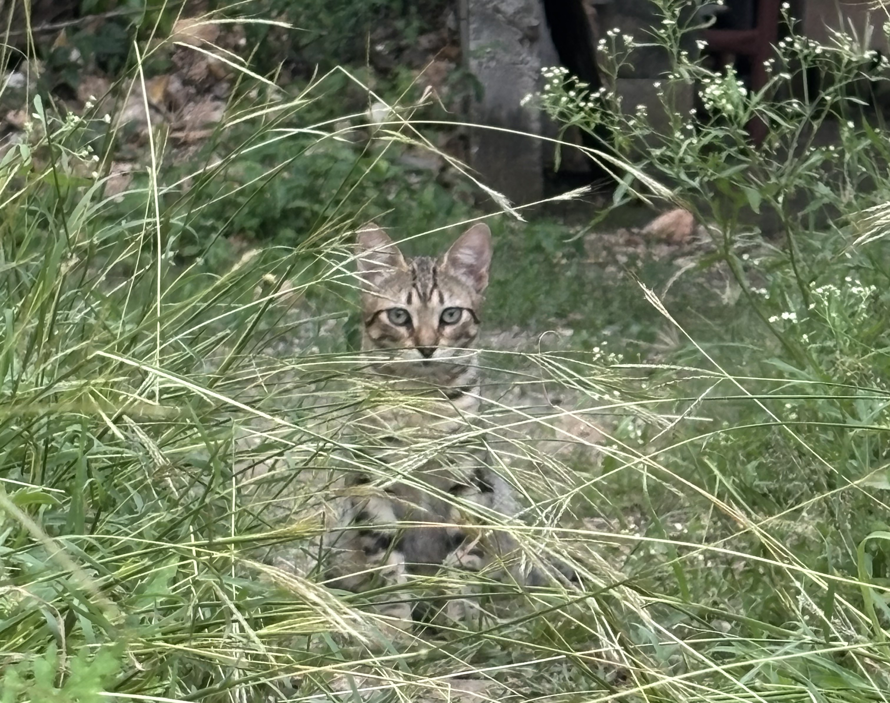
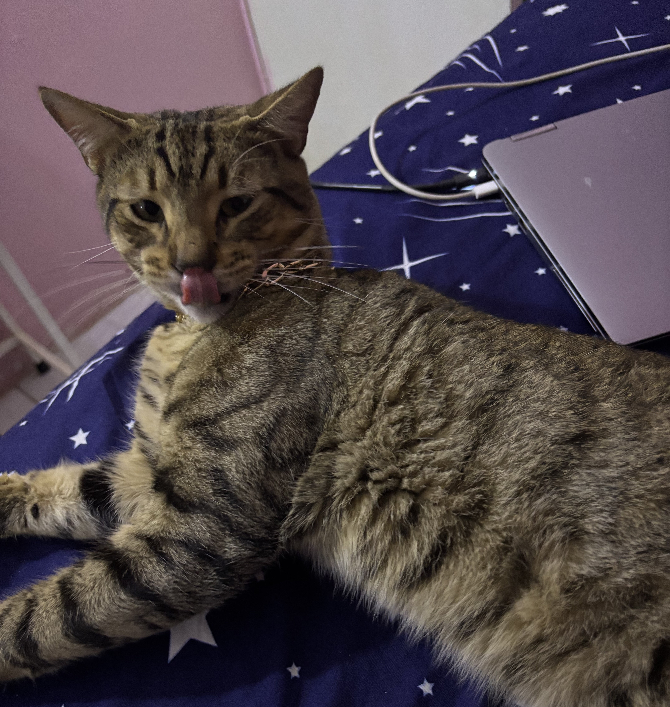

The Adventurer
October 06, 2026 by Ashay Phillips

Out of all eight, this little one is the most feral by choice. She'll sit in the grass just far enough away that I can't grab her, staring at me like she's deciding whether she wants to play or run off again. Most days she's a runner.
I used to think that meant she didn't like me, but cats just run on their own schedule. She shows up for dinner, she shows up when it rains, and every few weeks she lets me get one good photo before vanishing back into the yard. I've stopped taking it personally.
I still love her though.
My Unofficial Study Buddy
October 03, 2026 by Ashay Phillips

Every time I open my laptop to work on an assignment, one cat in particular decides that's exactly when he needs to be closest to me. Usually he parks himself directly on the keyboard, or just behind it so he can supervise my code line by line.
It's not helpful, strictly speaking. But there's something about coding at 11pm with a cat loafing beside the screen that makes the debugging a little less miserable. He doesn't fix my bugs, but he's great moral support.